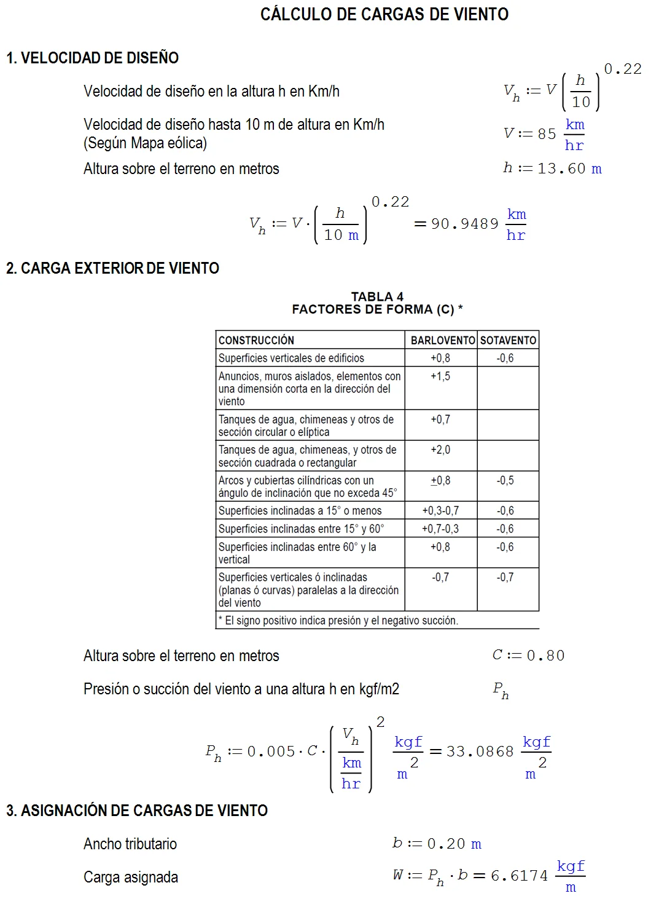
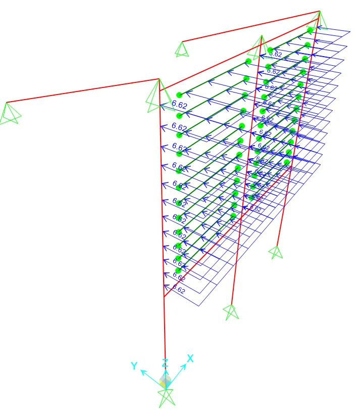
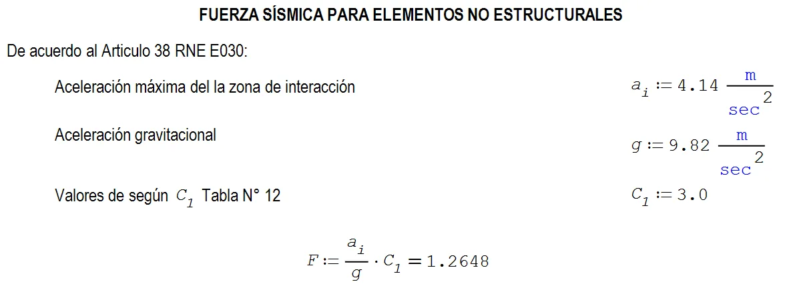
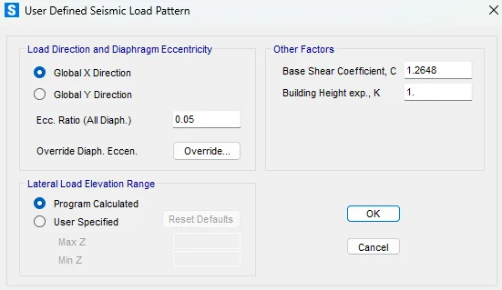
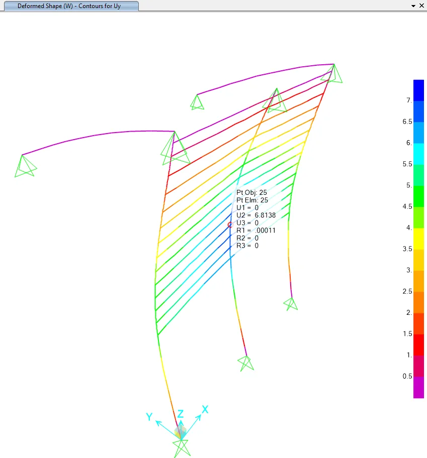
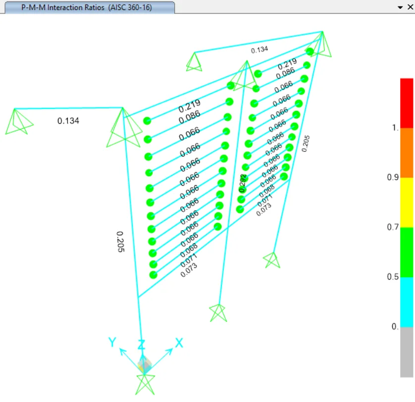
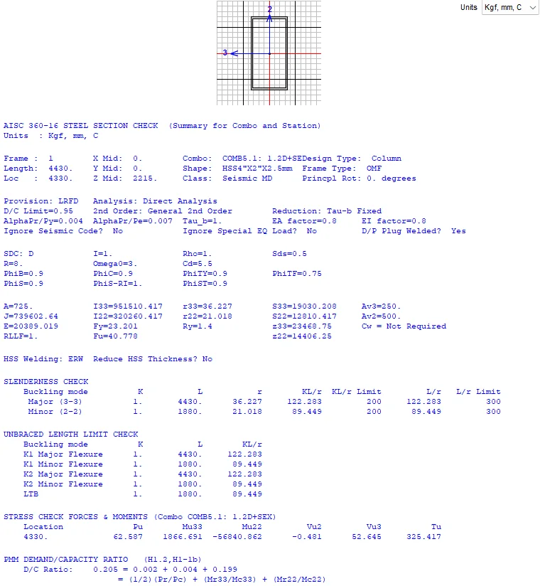
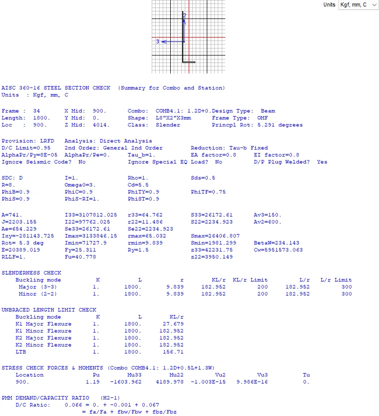

MEMORIA 18 · Elementos auxiliares metálicos
Soportes metálicos de celosías para balcones
Memoria técnica para soportes metálicos de celosías para balcones (Activos 470, 471 y 472). Organiza modelamiento estructural, cargas y combinaciones, diseño de acero, conexiones y anclajes con enfoque de portafolio, conservando solo información técnica publicable.
Índice técnico organizado
Capítulos y subcapítulos principales
Estructura reconstruida desde los encabezados del Word. Las páginas iniciales se toman de saltos de página renderizados guardados por el documento; cuando un bloque inicia en el cuerpo principal se muestra como pág. 1.
Página 3
criterios generales
Generalidades y alcance
Resume el alcance técnico de la memoria y los antecedentes usados para plantear la verificación estructural.
Página 3
criterios de diseño
Materiales y normativa
Agrupa propiedades de materiales, normas aplicables y criterios de resistencia usados para el análisis y diseño.
Página 3
modelación
Modelamiento estructural
Presenta la idealización estructural, geometría, apoyos y supuestos de modelación usados en la memoria.
Página 5
cargas
Cargas y combinaciones
Incluye cargas muertas, sobrecargas, viento, sismo y combinaciones usadas para evaluar resistencia y servicio.
Página 8
resultados
Resultados de análisis
Muestra la lectura de desplazamientos, derivas, deflexiones y respuesta global de la estructura frente a las solicitaciones.
Página 9
estructura metálica
Diseño de elementos de acero
Consolida verificaciones de miembros metálicos, razones demanda/capacidad y diseño de perfiles principales.
Página 13
conexiones
Conexiones y anclajes
Incluye revisión de placas, pernos, conexiones y reacciones transmitidas a los apoyos o elementos de soporte.
Galería técnica sanitizada
Modelos, resultados y verificaciones
Figuras extraídas del Word y filtradas para omitir logos, firmas, portadas y elementos administrativos. Se conserva contenido de modelación, cargas, resultados, conexiones y detalles de refuerzo.









